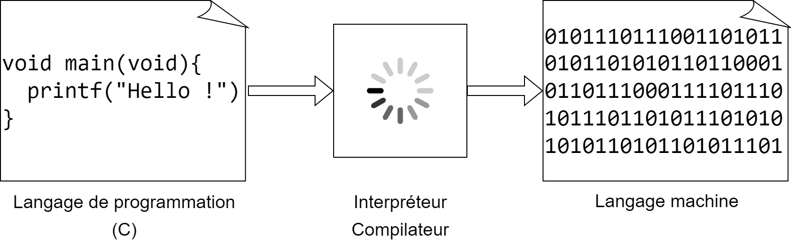
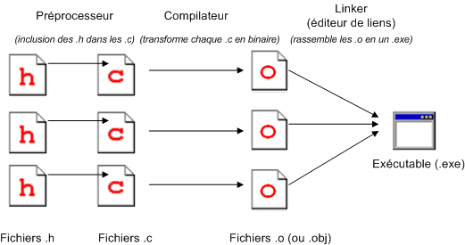

class: center, middle # Programmation procédurale : # introduction <img height="200px" src="img/logo.png"> --- name: sommaire ## On parle de quoi ? 1. <a href="#langage">Qu'est-ce qu'un langage de programmation ?</a> 2. <a href="#creation">Création d'un programme C</a> 3. <a href="#squelette">Le squelette d'un programme</a> 4. <a href="#erreurs">Les trois familles d'erreurs</a> 5. <a href="#compilateur">Lire un message du compilateur</a> 6. <a href="#methode">Méthode de travail</a> --- name: langage ## Qu'est-ce qu'un langage de programmation ? Un ordinateur est utilisé pour exécuter une série d'instructions. Problème : les ordinateurs ne "parlent" qu'en binaire (0 ou 1) : c'est le **langage machine**. Les instructions doivent donc être écrites dans ce langage pour qu'elles soient comprises par l'ordinateur. Solution : utiliser un langage de programmation (facilement manipulable par les humains) pour écrire ces instructions. Elles seront ensuite traduite en langage machine par un **interpréteur** ou un **compilateur** (en fonction du langage). <p></p> --- name: creation ## Création d'un programme C ### Étape 1 : l'édition → Création d'un fichier portant l'extension `.c` → C'est ce qu'on appelle un **programme source** ### Étape 2 : la compilation → Traduire le programme source en langage machine et vérifier les erreurs de syntaxe → Le résultat de la compilation porte le nom de **module objet** ### Étape 3 : l'édition de liens → L'éditeur de liens lie le programme objet avec les programmes de l'OS --- ### En résumé... <p></p> --- name: squelette ## Le squelette d'un programme Tous les extraits de code du livret d'exercices s'écrivent **à l'intérieur** de ce squelette : ```c #include <stdio.h> // les librairies dont j'ai besoin void main(void){ // le point d'entrée du programme // mes instructions, une par ligne, terminées par ; } ``` → `#include` : *directive de préprocesseur*, pas d'instruction, donc **pas de `;`** → `{` et `}` délimitent un **bloc** → chaque instruction se termine par un **`;`** → l'**indentation** ne change rien pour le compilateur, mais tout pour le lecteur --- ## Les librairies utiles cette année | Librairie | Ce qu'elle apporte | | --- | --- | | `stdio.h` | `printf`, `scanf`, `getchar`, `putchar` | | `stdbool.h` | le type `bool` et les valeurs `true` / `false` | | `math.h` | `sqrt`, `pow`, la constante `M_PI` | | `ctype.h` | `isdigit`, `isalpha`, `toupper`, `tolower` | | `stdlib.h` | `rand`, `srand`, `system` | | `time.h` | `time` (pour initialiser le générateur aléatoire) | → Oublier un `#include`, c'est une erreur de compilation : le compilateur ne connaît pas la fonction que vous utilisez. --- name: erreurs ## Les trois familles d'erreurs Une grande partie du livret consiste à **repérer une erreur**. Encore faut-il savoir de quelle erreur il s'agit. ### 1. L'erreur de compilation Le programme **ne se construit pas**. Le compilateur refuse et indique la ligne. ```c printf("Il reste %d essais.\n" compteur); // virgule manquante ``` ### 2. L'avertissement (*warning*) Le programme **se construit quand même**, mais le compilateur signale un risque. ```c float temperature = 18.6; printf("Il fait %d degres.", temperature); // %d avec un float ``` --- ### 3. L'erreur de logique Le programme se construit, s'exécute... et donne un **résultat faux**. Le compilateur ne dit rien. ```c int total = 250, nbArticles = 4; printf("Prix moyen : %.2f", total / nbArticles); // division entière : 62 et non 62.50 ``` → Cette troisième famille est la plus dangereuse : **rien ne vous prévient**. → C'est pour cela que le livret vous demande sans cesse de **prédire l'affichage avant d'exécuter**. --- ## Les trois familles d'erreurs Quelques exemples que vous rencontrerez : | Symptôme | Famille | Cause typique | | --- | --- | --- | | `expected ';'` | compilation | un `;` ou une `,` oublié | | `undeclared identifier` | compilation | variable non déclarée, ou faute de casse | | `format '%d' expects int` | avertissement | mauvais code de formatage | | affichage `0.00` inattendu | logique | division entière | | valeur négative surprenante | logique | dépassement de capacité | | une ligne vide "magique" | logique | le tampon clavier | --- name: compilateur ## Lire un message du compilateur ``` prog.c:6:28: error: expected ')' before 'compteur' 6 | printf("Il reste %d essais.\n" compteur); | ^~~~~~~~ ``` Un message se lit toujours de la même façon : 1. **le fichier** : `prog.c` 2. **la ligne et la colonne** : `6:28` 3. **la gravité** : `error` (bloquant) ou `warning` (non bloquant) 4. **le diagnostic** : `expected ')' before ...` → Corrigez **toujours la première erreur de la liste** puis recompilez : une seule erreur en provoque souvent dix autres. → N'ignorez jamais un `warning` : c'est presque toujours une future erreur de logique. --- name: methode ## Méthode de travail pour le livret Pour chaque exercice de lecture de code : 1. **Je lis** le programme en entier avant de juger. 2. **Je trace à la main** : je note l'état de chaque variable, ligne par ligne. 3. **J'écris l'affichage attendu**, espaces et décimales compris. 4. **Je compile ensuite** pour confronter ma prédiction au résultat réel. 5. **Si je me suis trompé, je cherche pourquoi** : c'est là qu'on apprend. Pour chaque exercice d'écriture de programme : 1. Quelles sont les **données** ? De quel **type** ? 2. Quel est le **résultat** attendu, et sous quelle **forme** ? 3. Quelles **opérations** relient les deux ? 4. J'écris, je compile, je teste avec les **cas limites** (0, une valeur négative, une valeur énorme). --- ## Bon à savoir → Compilez avec les avertissements activés : ``` gcc -Wall -Wextra prog.c -o prog ``` → Sous Visual Studio, `scanf` et `printf` peuvent être refusés au profit de `scanf_s` et `printf_s` : les deux écritures apparaissent dans ce cours. → Sous Windows, `system("pause");` en fin de `main` empêche la console de se refermer immédiatement. → Un programme qui compile n'est pas un programme qui fonctionne.